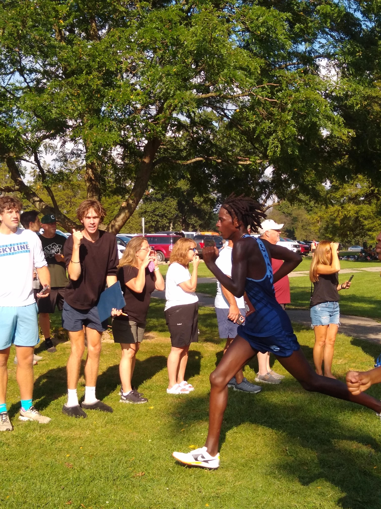
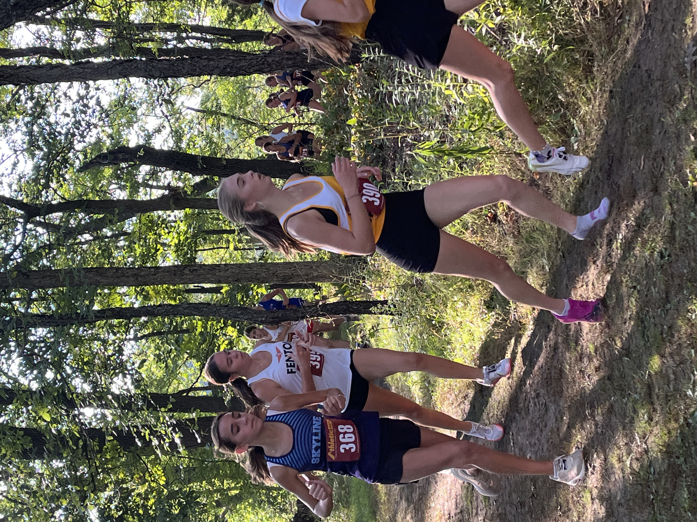
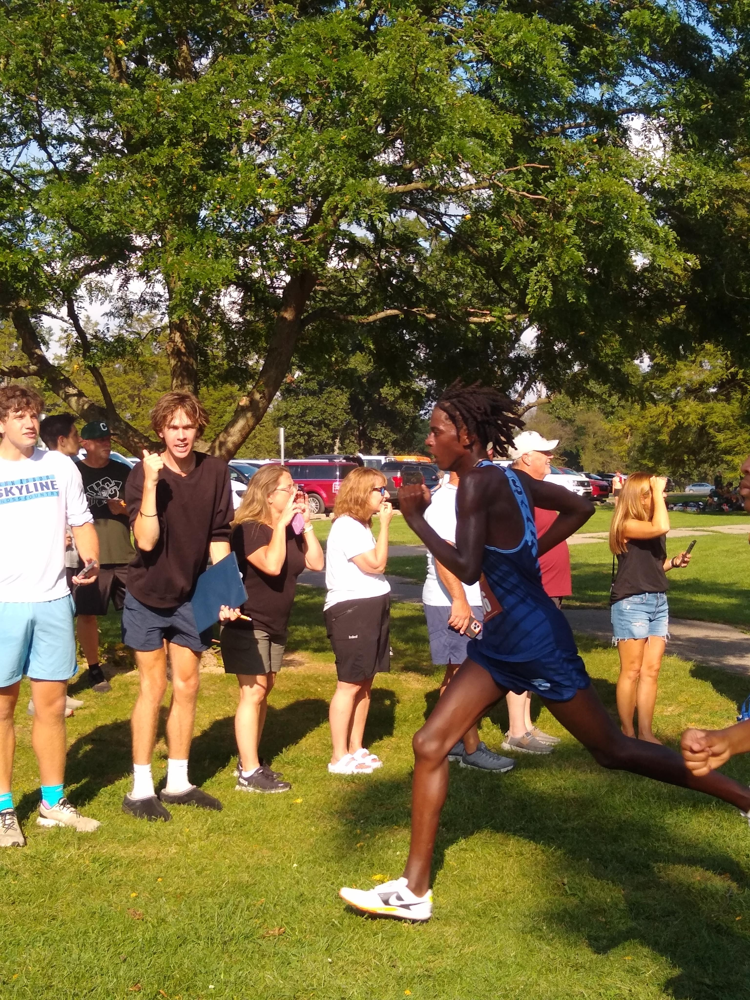
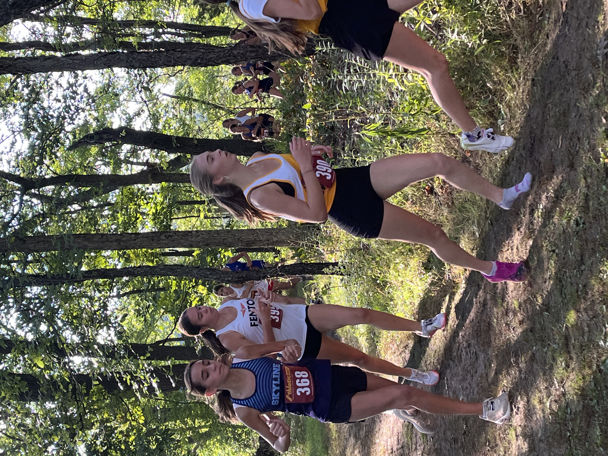

Meet Summary
Ann Arbor Skyline's JV girls finished 4th overall with 84 points. Leading the charge was Violet Olley (24:37), followed closely by Adrienne Stewart (24:40), Julianna Heung (25:21), and Calla Sopoci (25:22). Ruthie Scott (25:31) rounded out the top five, with strong efforts from Alexandra Wren (25:33) and Elsa Wenzlaff (25:36). The team showed solid depth across the board. PRs: Violet Olley (24:37), Calla Sopoci (25:22), and Livi Byers (33:54).
Photo Gallery
 





Team Placements
| Team | Score | Placement |
|---|---|---|
| Ypsilanti Lincoln | 22 | 1 |
| Saline | 73 | 2 |
| Dexter | 81 | 3 |
Individual Placements
| Place | Grade | Name | Time | Team |
|---|---|---|---|---|
| 1. | 12 | Kylie Warner | 24:16.80 | Saline |
| 2. | 12 | Luciana Sweeney | 24:17.00 | Saline |
| 3. | 10 | Isabel McEwen | 24:24.80 | Ann Arbor Pioneer |
| 4. | 9 | Deborah Song | 24:30.80 | Ann Arbor Huron |
| 5. | 12 | Avanti Ganesan | 24:35.60 | Ann Arbor Pioneer |